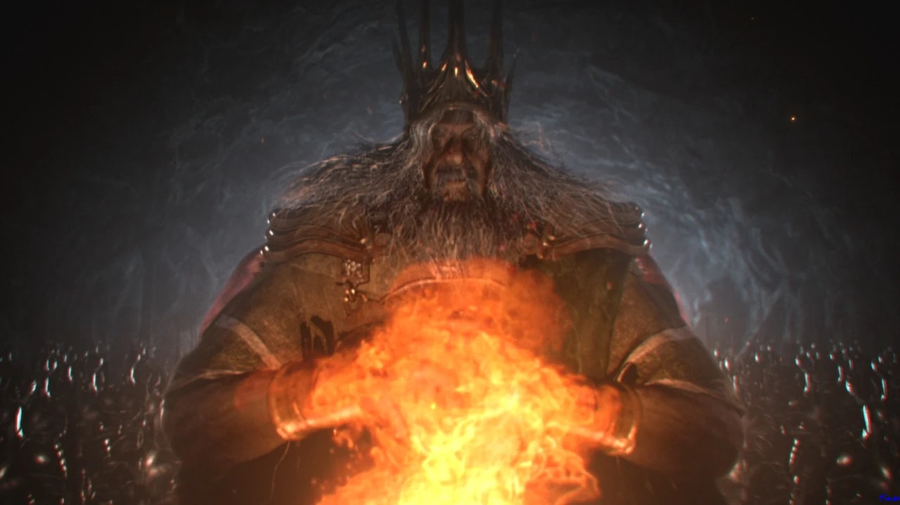

Dark Souls: Путь Избранного Нежити — это мрачное фэнтези-приключение в мире, где каждый шаг может стать последним.
Игрок берёт на себя роль Избранного Нежити, которому предстоит пройти через опасный мир Лордрана. Во время путешествия он исследует древние руины, сражается с нежитью и демонами, находит новое снаряжение и преодолевает многочисленные испытания.
Каждая локация представляет собой отдельный этап с уникальными врагами, препятствиями и заданиями. Цель игры — пройти все этапы путешествия и победить финального босса, Гвина, Повелителя Пепла, чтобы решить судьбу Первого Пламени.

Путешествие сквозь Лордран
Ответы на вопросы, которые задают путники Лордрана.
Зарегистрируйся и начни своё путешествие через мрачный мир Лордрана прямо сейчас.
Играть онлайн